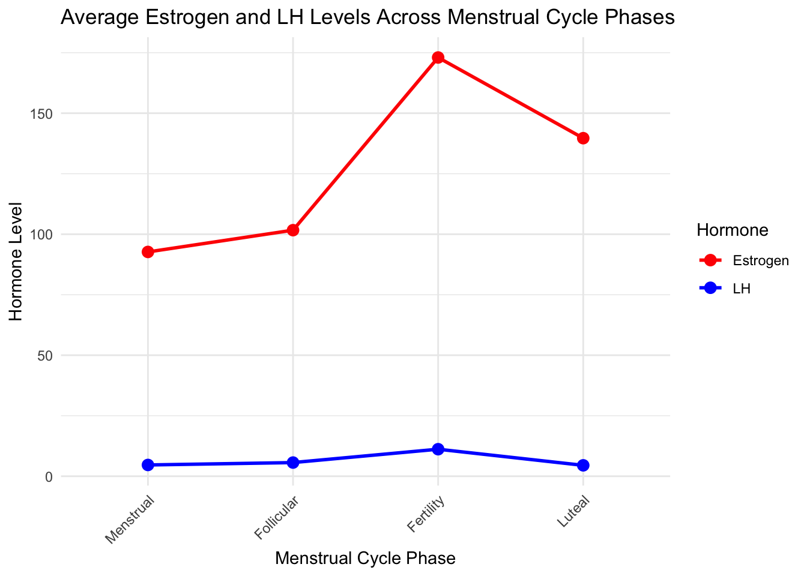
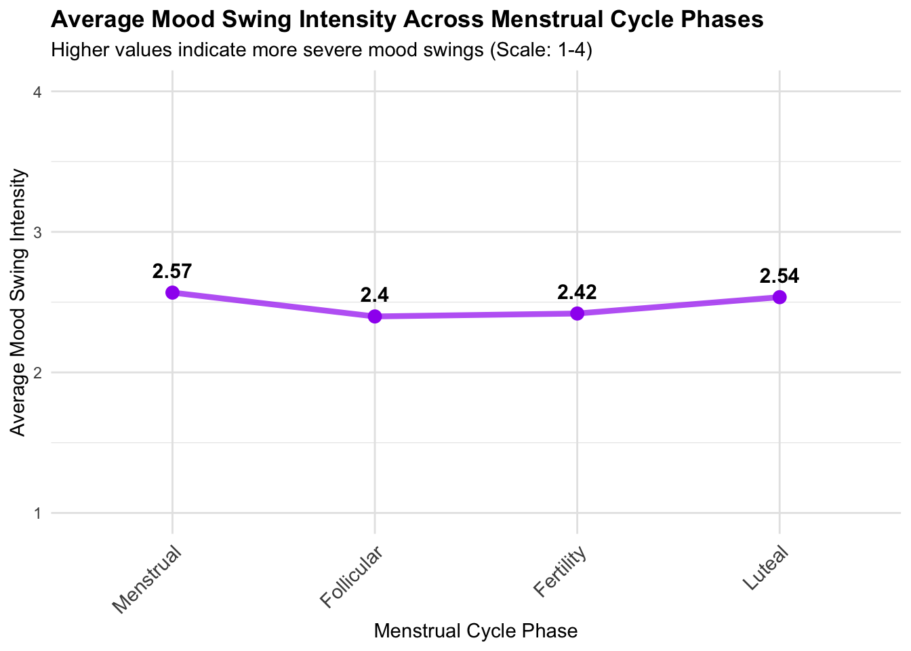
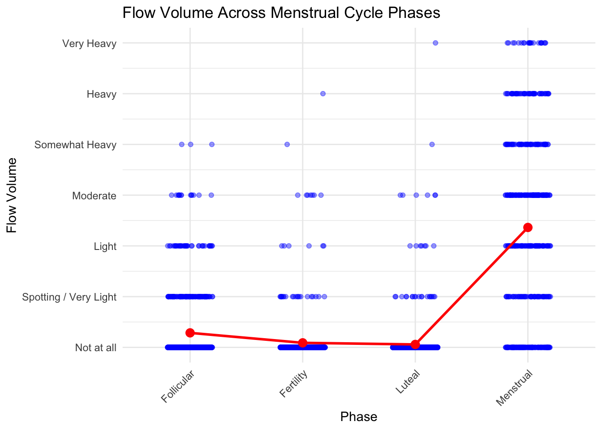
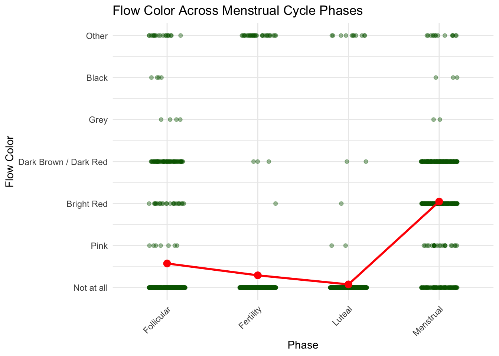
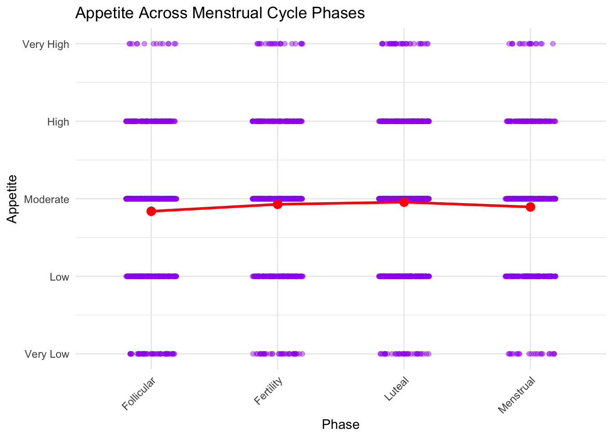
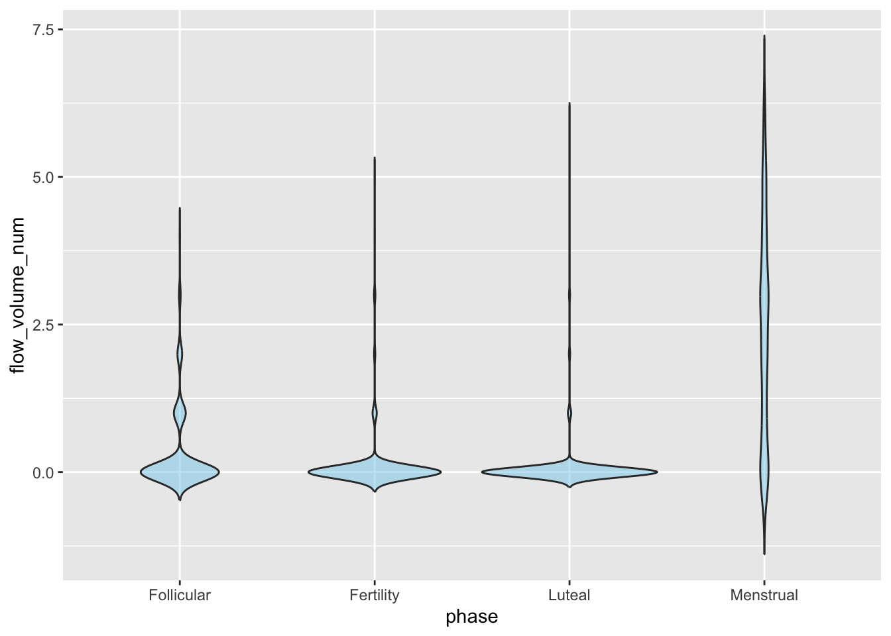
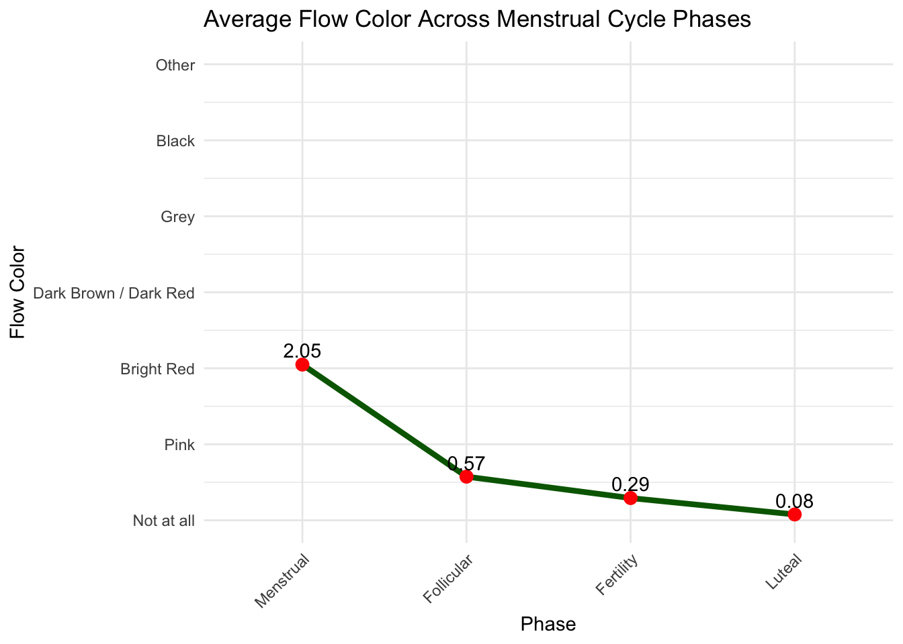
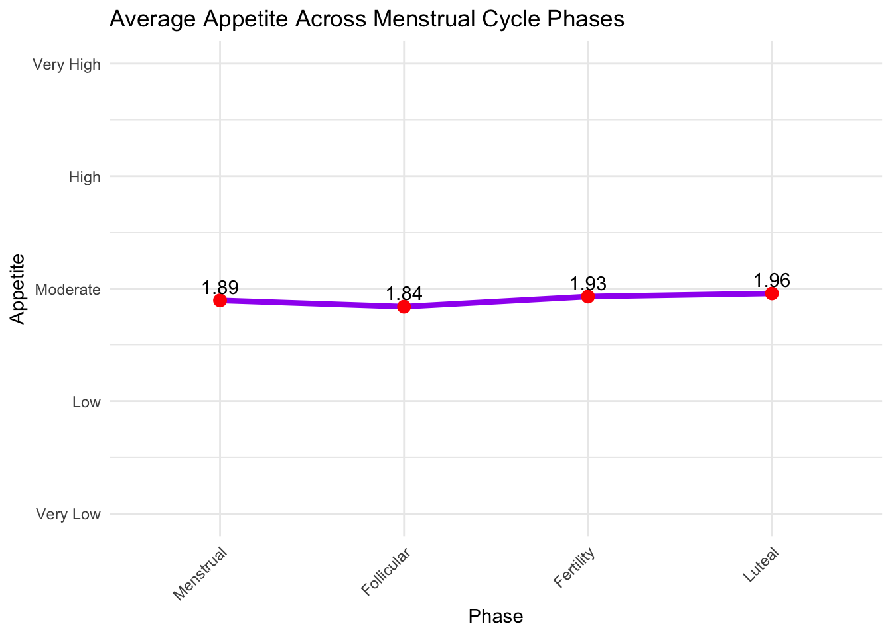
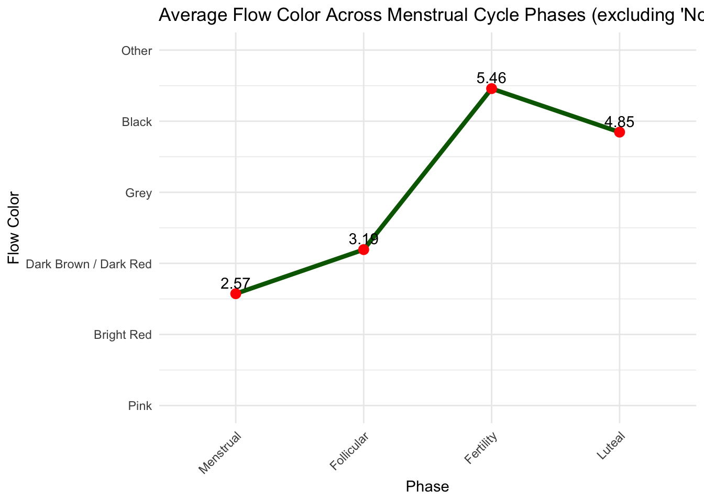

hormone
##yue’s interest: phase, lh, estrogen, moodswing, fatigue
first, explore relationship between LH and estrogen
my_int_avg=
my_int|>
group_by(phase)|>
summarise(
estrogen_mean = mean(estrogen, na.rm = TRUE),
lh_mean = mean(lh, na.rm = TRUE)
)|>
mutate(phase = factor(phase, levels = phase_order))|>
filter(!is.na(phase))
# Plot the summarized data
ggplot(my_int_avg, aes(x = phase)) +
geom_line(aes(y = estrogen_mean, color = "Estrogen", group = 1), size = 1) +
geom_line(aes(y = lh_mean, color = "LH", group = 1), size = 1) +
geom_point(aes(y = estrogen_mean, color = "Estrogen"), size = 3) +
geom_point(aes(y = lh_mean, color = "LH"),size= 3) +
labs(
title = "Average Estrogen and LH Levels Across Menstrual Cycle Phases",
x = "Menstrual Cycle Phase",
y = "Hormone Level",
color = "Hormone"
) +
scale_color_manual(values = c("Estrogen" = "red", "LH" = "blue")) +
theme_minimal() +
theme(axis.text.x = element_text(angle = 45, hjust = 1)) #estrogen surge at fertility(actually it should be called ovulation) #lh also peak at ovulation
fatigue and moodswing
##this two bar graph show the proportion of fatigue and moodswing among four phases, but they are hard to read.
#so i aim to change the catogorical value (low, moderate, high) to 1,2,3, and so on. i want to sum and avrage. to show a typical cahnge of fatigue and mood in four phases.
# Convert moodswing and fatigue to numeric intensity scores
my_int_numeric <- my_int_clean %>%
mutate(
moodswing_num = case_when(
moodswing == "Not at all" ~0,
moodswing == "Very Low/Little" ~ 1,
moodswing == "Low" ~ 2,
moodswing == "Moderate" ~ 3,
moodswing == "High" ~ 4,
moodswing == "Very High" ~ 5,
TRUE ~ NA_real_
),
fatigue_num = case_when(
fatigue == "Not at all" ~0,
fatigue == "Low" ~ 1,
fatigue == "Moderate" ~ 2,
fatigue == "High" ~ 3,
fatigue == "Very High" ~ 4,
TRUE ~ NA_real_
)
)
# Calculate average intensity by phase
symptom_means <- my_int_numeric %>%
group_by(phase = factor(phase, levels = phase_order)) %>%
summarise(
avg_moodswing = mean(moodswing_num, na.rm = TRUE),
avg_fatigue = mean(fatigue_num, na.rm = TRUE),
n = n(),
.groups = 'drop'
)
symptom_means## # A tibble: 4 × 4
## phase avg_moodswing avg_fatigue n
## <fct> <dbl> <dbl> <int>
## 1 Menstrual 1.96 2.10 533
## 2 Follicular 1.53 1.90 719
## 3 Fertility 1.52 1.81 629
## 4 Luteal 1.56 1.86 965#overall scatterplot (can be deleted)
ggplot(my_int_numeric, aes(x = phase, y = fatigue_num)) +
geom_jitter(width = 0.2, alpha = 0.4, size = 1.5) +
stat_summary(fun = mean, geom = "point", color = "red", size = 4) +
labs(
title = "Fatigue Intensity Across Menstrual Cycle Phases",
x = "Phase",
y = "Fatigue (0–4 scale)"
) +
theme_minimal() +
theme(axis.text.x = element_text(angle = 45, hjust = 1))
ggplot(my_int_numeric, aes(x = phase, y = moodswing_num)) +
geom_jitter(width = 0.2, alpha = 0.4, size = 1.5) +
stat_summary(fun = mean, geom = "point", color = "blue", size = 4) +
labs(
title = "Mood Swing Intensity Across Menstrual Cycle Phases",
x = "Phase",
y = "Mood Swing (0–5 scale)"
) +
theme_minimal() +
theme(axis.text.x = element_text(angle = 45, hjust = 1))
# Mood swing single line plot
ggplot(symptom_means, aes(x = phase, y = avg_moodswing, group = 1)) +
geom_line(color = "purple", size = 1.5, alpha = 0.7) +
geom_point(color = "purple", size = 3) +
geom_text(aes(label = round(avg_moodswing, 2)), vjust = -1, size = 4, fontface = "bold") +
labs(
title = "Average Mood Swing Intensity Across Menstrual Cycle Phases",
subtitle = "Higher values indicate more severe mood swings (Scale: 1-4)",
x = "Menstrual Cycle Phase",
y = "Average Mood Swing Intensity"
) +
ylim(1, 4) +
theme_minimal() +
theme(
axis.text.x = element_text(angle = 45, hjust = 1, size = 11),
plot.title = element_text(face = "bold"),
panel.grid.major = element_line(color = "grey90")
)
# Fatigue single line plot
ggplot(symptom_means, aes(x = phase, y = avg_fatigue, group = 1)) +
geom_line(color = "darkorange", size = 1.5, alpha = 0.7) +
geom_point(color = "darkorange", size = 3) +
geom_text(aes(label = round(avg_fatigue, 2)), vjust = -1, size = 4, fontface = "bold") +
labs(
title = "Average Fatigue Intensity Across Menstrual Cycle Phases",
subtitle = "Higher values indicate more severe fatigue (Scale: 1-4)",
x = "Menstrual Cycle Phase",
y = "Average Fatigue Intensity"
) +
ylim(1, 4) +
theme_minimal() +
theme(
axis.text.x = element_text(angle = 45, hjust = 1, size = 11),
plot.title = element_text(face = "bold"),
panel.grid.major = element_line(color = "grey90")
)
for the test, i want to test if moodswing and fatigue have statsitically difference between those four phases.
kruskal.test(moodswing_num ~ phase, data = my_int_numeric)##
## Kruskal-Wallis rank sum test
##
## data: moodswing_num by phase
## Kruskal-Wallis chi-squared = 36.244, df = 3, p-value = 6.648e-08kruskal.test(fatigue_num ~ phase, data = my_int_numeric)##
## Kruskal-Wallis rank sum test
##
## data: fatigue_num by phase
## Kruskal-Wallis chi-squared = 18.896, df = 3, p-value = 0.0002873#Mood swing intensity differs significantly across menstrual phases.
#Fatigue intensity also differs significantly across phases.
#swich approach: longtidual changes
library(lme4)
# Moodswing model
m1 <- lmer(moodswing_num ~ phase + (1 | id), data = my_int_numeric)
summary(m1)## Linear mixed model fit by REML. t-tests use Satterthwaite's method [
## lmerModLmerTest]
## Formula: moodswing_num ~ phase + (1 | id)
## Data: my_int_numeric
##
## REML criterion at convergence: 8506.2
##
## Scaled residuals:
## Min 1Q Median 3Q Max
## -3.0689 -0.5616 -0.1457 0.4561 4.1382
##
## Random effects:
## Groups Name Variance Std.Dev.
## id (Intercept) 1.051 1.025
## Residual 1.091 1.044
## Number of obs: 2846, groups: id, 42
##
## Fixed effects:
## Estimate Std. Error df t value Pr(>|t|)
## (Intercept) 1.464e+00 1.633e-01 4.512e+01 8.967 1.38e-11 ***
## phaseFertility -2.881e-03 5.783e-02 2.805e+03 -0.050 0.9603
## phaseLuteal 1.319e-01 5.299e-02 2.807e+03 2.489 0.0129 *
## phaseMenstrual 3.584e-01 6.118e-02 2.806e+03 5.858 5.24e-09 ***
## ---
## Signif. codes: 0 '***' 0.001 '**' 0.01 '*' 0.05 '.' 0.1 ' ' 1
##
## Correlation of Fixed Effects:
## (Intr) phsFrt phsLtl
## phaseFrtlty -0.166
## phaseLuteal -0.184 0.525
## phaseMnstrl -0.159 0.457 0.506# Fatigue model
m2 <- lmer(fatigue_num ~ phase + (1 | id), data = my_int_numeric)
summary(m2)## Linear mixed model fit by REML. t-tests use Satterthwaite's method [
## lmerModLmerTest]
## Formula: fatigue_num ~ phase + (1 | id)
## Data: my_int_numeric
##
## REML criterion at convergence: 7930.3
##
## Scaled residuals:
## Min 1Q Median 3Q Max
## -3.1591 -0.6811 -0.0214 0.5734 3.6953
##
## Random effects:
## Groups Name Variance Std.Dev.
## id (Intercept) 0.4885 0.6989
## Residual 0.8978 0.9475
## Number of obs: 2846, groups: id, 42
##
## Fixed effects:
## Estimate Std. Error df t value Pr(>|t|)
## (Intercept) 1.803e+00 1.140e-01 4.746e+01 15.817 < 2e-16 ***
## phaseFertility -3.221e-03 5.246e-02 2.806e+03 -0.061 0.951
## phaseLuteal 6.817e-02 4.806e-02 2.811e+03 1.418 0.156
## phaseMenstrual 2.740e-01 5.549e-02 2.809e+03 4.937 8.39e-07 ***
## ---
## Signif. codes: 0 '***' 0.001 '**' 0.01 '*' 0.05 '.' 0.1 ' ' 1
##
## Correlation of Fixed Effects:
## (Intr) phsFrt phsLtl
## phaseFrtlty -0.216
## phaseLuteal -0.239 0.525
## phaseMnstrl -0.206 0.457 0.506#for moodswing: Luteal phase: +0.13 (t = 2.49) Menstrual phase: +0.36 (t = 5.86) After accounting for repeated measures within individuals, mood swings are significantly higher in the Luteal and Menstrual phases compared to the Follicular phase.
#for fatigue: Menstrual phase: +0.27 (t = 4.94) Luteal (+0.07) and Fertility (~0) phases not significant. only the Menstrual phase shows significantly higher fatigue compared to the Follicular phase.
reletionship between hormone and flow color, flor volume, and appetite
my_i =
hormone |>
select(id, phase, lh, estrogen, flow_color, flow_volume, appetite) |>
mutate(
phase = factor(phase, levels = c("Follicular", "Fertility", "Luteal", "Menstrual")),
flow_volume = factor(flow_volume,
levels = c("Not at all", "Spotting / Very Light","Light","Moderate",
"Somewhat Heavy","Heavy", "Very Heavy")),
flow_color = factor(flow_color,
levels = c("Not at all", "Pink","Bright Red", "Dark Brown / Dark Red", "Grey",
"Black","Other")),
appetite = factor(appetite,
levels = c("Very Low","Low", "Moderate", "High", "Very High"))
)
phase_order = c("Menstrual", "Follicular", "Fertility", "Luteal")
colSums(is.na(my_i[, c("flow_volume", "flow_color", "appetite")]))## flow_volume flow_color appetite
## 2567 2617 2333# Flow volume frequencies by phase
table_flow_vol <- my_i %>%
filter(!is.na(flow_volume)) %>%
count(phase, flow_volume) %>%
group_by(phase) %>%
mutate(pct = n / sum(n) * 100) %>%
arrange(phase)
table_flow_vol## # A tibble: 25 × 4
## # Groups: phase [5]
## phase flow_volume n pct
## <fct> <fct> <int> <dbl>
## 1 Follicular Not at all 652 80.8
## 2 Follicular Spotting / Very Light 99 12.3
## 3 Follicular Light 39 4.83
## 4 Follicular Moderate 14 1.73
## 5 Follicular Somewhat Heavy 3 0.372
## 6 Fertility Not at all 666 94.9
## 7 Fertility Spotting / Very Light 21 2.99
## 8 Fertility Light 6 0.855
## 9 Fertility Moderate 7 0.997
## 10 Fertility Somewhat Heavy 1 0.142
## # ℹ 15 more rows# Flow color
table_flow_color <- my_i %>%
filter(!is.na(flow_color)) %>%
count(phase, flow_color) %>%
group_by(phase) %>%
mutate(pct = n / sum(n) * 100)
table_flow_color## # A tibble: 24 × 4
## # Groups: phase [5]
## phase flow_color n pct
## <fct> <fct> <int> <dbl>
## 1 Follicular Not at all 639 82.2
## 2 Follicular Pink 7 0.901
## 3 Follicular Bright Red 23 2.96
## 4 Follicular Dark Brown / Dark Red 81 10.4
## 5 Follicular Grey 4 0.515
## 6 Follicular Black 4 0.515
## 7 Follicular Other 19 2.45
## 8 Fertility Not at all 639 94.8
## 9 Fertility Bright Red 1 0.148
## 10 Fertility Dark Brown / Dark Red 3 0.445
## # ℹ 14 more rows# Appetite
table_appetite <- my_i %>%
filter(!is.na(appetite)) %>%
count(phase, appetite) %>%
group_by(phase) %>%
mutate(pct = n / sum(n) * 100)
table_appetite## # A tibble: 21 × 4
## # Groups: phase [5]
## phase appetite n pct
## <fct> <fct> <int> <dbl>
## 1 Follicular Very Low 55 6.55
## 2 Follicular Low 193 23.0
## 3 Follicular Moderate 438 52.1
## 4 Follicular High 140 16.7
## 5 Follicular Very High 14 1.67
## 6 Fertility Very Low 37 5.05
## 7 Fertility Low 156 21.3
## 8 Fertility Moderate 384 52.5
## 9 Fertility High 132 18.0
## 10 Fertility Very High 23 3.14
## # ℹ 11 more rowsOverall scatter plot for three variables:
my_i_plot <- my_i %>%
filter(!is.na(phase) & (!is.na(flow_volume) | !is.na(flow_color) | !is.na(appetite)))
# Optional: convert ordered factors to numeric for plotting
my_i_plot <- my_i_plot %>%
mutate(
flow_volume_num = as.numeric(flow_volume),
flow_color_num = as.numeric(flow_color),
appetite_num = as.numeric(appetite)
)
# 1) FLOW VOLUME
ggplot(my_i_plot, aes(x = phase, y = flow_volume_num)) +
geom_jitter(width = 0.2, height = 0, alpha = 0.4, color = "blue") +
stat_summary(fun = mean, geom = "point", size = 3, color = "red") +
stat_summary(fun = mean, geom = "line", aes(group = 1), color = "red", size = 1) +
scale_y_continuous(
breaks = 1:length(levels(my_i$flow_volume)),
labels = levels(my_i$flow_volume)
) +
labs(title = "Flow Volume Across Menstrual Cycle Phases",
y = "Flow Volume",
x = "Phase") +
theme_minimal() +
theme(axis.text.x = element_text(angle = 45, hjust = 1))## Warning: Removed 460 rows containing non-finite outside the scale
## range (`stat_summary()`).
## Removed 460 rows containing non-finite outside the scale
## range (`stat_summary()`).## Warning: Removed 460 rows containing missing values or values
## outside the scale range (`geom_point()`).
# 2) FLOW COLOR
ggplot(my_i_plot, aes(x = phase, y = flow_color_num)) +
geom_jitter(width = 0.2, height = 0, alpha = 0.4, color = "darkgreen") +
stat_summary(fun = mean, geom = "point", size = 3, color = "red") +
stat_summary(fun = mean, geom = "line", aes(group = 1), color = "red", size = 1) +
scale_y_continuous(
breaks = 1:length(levels(my_i$flow_color)),
labels = levels(my_i$flow_color)
) +
labs(title = "Flow Color Across Menstrual Cycle Phases",
y = "Flow Color",
x = "Phase") +
theme_minimal() +
theme(axis.text.x = element_text(angle = 45, hjust = 1))## Warning: Removed 510 rows containing non-finite outside the scale
## range (`stat_summary()`).## Warning: Removed 510 rows containing non-finite outside the scale
## range (`stat_summary()`).## Warning: Removed 510 rows containing missing values or values
## outside the scale range (`geom_point()`).
# 3) APPETITE
ggplot(my_i_plot, aes(x = phase, y = appetite_num)) +
geom_jitter(width = 0.2, height = 0, alpha = 0.4, color = "purple") +
stat_summary(fun = mean, geom = "point", size = 3, color = "red") +
stat_summary(fun = mean, geom = "line", aes(group = 1), color = "red", size = 1) +
scale_y_continuous(
breaks = 1:length(levels(my_i$appetite)),
labels = levels(my_i$appetite)
) +
labs(title = "Appetite Across Menstrual Cycle Phases",
y = "Appetite",
x = "Phase") +
theme_minimal() +
theme(axis.text.x = element_text(angle = 45, hjust = 1))## Warning: Removed 226 rows containing non-finite outside the scale
## range (`stat_summary()`).## Warning: Removed 226 rows containing non-finite outside the scale
## range (`stat_summary()`).## Warning: Removed 226 rows containing missing values or values
## outside the scale range (`geom_point()`).
#give them order to do the avereage graph
my_i_num <- my_i %>%
filter(!is.na(phase)) %>%
mutate(
# Flow volume: example mapping
flow_volume_num = case_when(
flow_volume == "Not at all" ~ 0,
flow_volume == "Spotting / Very Light" ~ 1,
flow_volume == "Light" ~ 2,
flow_volume == "Moderate" ~ 3,
flow_volume == "Somewhat Heavy" ~ 4,
flow_volume == "Heavy" ~ 5,
flow_volume == "Very Heavy" ~ 6,
TRUE ~ NA_real_
),
# Flow color: example mapping
flow_color_num = case_when(
flow_color == "Not at all" ~ 0,
flow_color == "Pink" ~ 1,
flow_color == "Bright Red" ~ 2,
flow_color == "Dark Brown / Dark Red" ~ 3,
flow_color == "Grey" ~ 4,
flow_color == "Black" ~ 5,
flow_color == "Other" ~ 6,
TRUE ~ NA_real_
),
# Appetite: example mapping
appetite_num = case_when(
appetite == "Very Low" ~ 0,
appetite == "Low" ~ 1,
appetite == "Moderate" ~ 2,
appetite == "High" ~ 3,
appetite == "Very High" ~ 4,
TRUE ~ NA_real_
)
)#graphing
phase_order <- c("Menstrual", "Follicular", "Fertility", "Luteal")
my_i_avg <- my_i_num %>%
group_by(phase = factor(phase, levels = phase_order)) %>%
summarise(
avg_flow_volume = mean(flow_volume_num, na.rm = TRUE),
avg_flow_color = mean(flow_color_num, na.rm = TRUE),
avg_appetite = mean(appetite_num, na.rm = TRUE),
.groups = 'drop'
)
flow_volume_levels <- c("Not at all", "Spotting / Very Light", "Light", "Moderate",
"Somewhat Heavy", "Heavy", "Very Heavy")
ggplot(my_i_avg, aes(x = phase, y = avg_flow_volume, group = 1)) +
geom_line(color = "blue", size = 1.5) +
geom_point(color = "red", size = 3) +
geom_text(aes(label = round(avg_flow_volume,2)), vjust = -0.5) +
scale_y_continuous(limits = c(0,6), breaks = 0:6, labels = flow_volume_levels) +
labs(title = "Average Flow Volume Across Menstrual Cycle Phases",
x = "Phase", y = "Flow Volume") +
theme_minimal() +
theme(axis.text.x = element_text(angle = 45, hjust = 1))
# Flow color
flow_color_levels <- c("Not at all", "Pink", "Bright Red", "Dark Brown / Dark Red",
"Grey", "Black", "Other")
ggplot(my_i_avg, aes(x = phase, y = avg_flow_color, group = 1)) +
geom_line(color = "darkgreen", size = 1.5) +
geom_point(color = "red", size = 3) +
geom_text(aes(label = round(avg_flow_color,2)), vjust = -0.5) +
scale_y_continuous(limits = c(0,6), breaks = 0:6, labels = flow_color_levels) +
labs(title = "Average Flow Color Across Menstrual Cycle Phases",
x = "Phase", y = "Flow Color") +
theme_minimal() +
theme(axis.text.x = element_text(angle = 45, hjust = 1))
# Appetite
appetite_levels <- c("Very Low", "Low", "Moderate", "High", "Very High")
ggplot(my_i_avg, aes(x = phase, y = avg_appetite, group = 1)) +
geom_line(color = "purple", size = 1.5) +
geom_point(color = "red", size = 3) +
geom_text(aes(label = round(avg_appetite,2)), vjust = -0.5) +
scale_y_continuous(limits = c(0,4), breaks = 0:4, labels = appetite_levels) +
labs(title = "Average Appetite Across Menstrual Cycle Phases",
x = "Phase", y = "Appetite") +
theme_minimal() +
theme(axis.text.x = element_text(angle = 45, hjust = 1))
#the not at all strongly affect the curve. so i tried another scatter plot for each (delete the not at all)
my_i_filtered <- my_i %>%
filter(flow_volume != "Not at all", flow_color != "Not at all") %>%
mutate(
# Flow volume numeric mapping
flow_volume_num = case_when(
flow_volume == "Spotting / Very Light" ~ 1,
flow_volume == "Light" ~ 2,
flow_volume == "Moderate" ~ 3,
flow_volume == "Somewhat Heavy" ~ 4,
flow_volume == "Heavy" ~ 5,
flow_volume == "Very Heavy" ~ 6,
TRUE ~ NA_real_
),
# Flow color numeric mapping
flow_color_num = case_when(
flow_color == "Pink" ~ 1,
flow_color == "Bright Red" ~ 2,
flow_color == "Dark Brown / Dark Red" ~ 3,
flow_color == "Grey" ~ 4,
flow_color == "Black" ~ 5,
flow_color == "Other" ~ 6,
TRUE ~ NA_real_
)
)
phase_order <- c("Menstrual", "Follicular", "Fertility", "Luteal")
avg_flow <- my_i_filtered %>%
group_by(phase = factor(phase, levels = phase_order)) %>%
summarise(
avg_flow_volume = mean(flow_volume_num, na.rm = TRUE),
avg_flow_color = mean(flow_color_num, na.rm = TRUE),
.groups = 'drop'
)
flow_volume_levels <- c("Spotting / Very Light", "Light", "Moderate",
"Somewhat Heavy", "Heavy", "Very Heavy")
ggplot(avg_flow, aes(x = phase, y = avg_flow_volume, group = 1)) +
geom_line(color = "blue", size = 1.5) +
geom_point(color = "red", size = 3) +
geom_text(aes(label = round(avg_flow_volume,2)), vjust = -0.5) +
scale_y_continuous(limits = c(1,6), breaks = 1:6, labels = flow_volume_levels) +
labs(title = "Average Flow Volume Across Menstrual Cycle Phases (excluding 'Not at all')",
x = "Phase", y = "Flow Volume") +
theme_minimal() +
theme(axis.text.x = element_text(angle = 45, hjust = 1))
# Flow Color
flow_color_levels <- c("Pink", "Bright Red", "Dark Brown / Dark Red", "Grey",
"Black", "Other")
ggplot(avg_flow, aes(x = phase, y = avg_flow_color, group = 1)) +
geom_line(color = "darkgreen", size = 1.5) +
geom_point(color = "red", size = 3) +
geom_text(aes(label = round(avg_flow_color,2)), vjust = -0.5) +
scale_y_continuous(limits = c(1,6), breaks = 1:6, labels = flow_color_levels) +
labs(title = "Average Flow Color Across Menstrual Cycle Phases (excluding 'Not at all')",
x = "Phase", y = "Flow Color") +
theme_minimal() +
theme(axis.text.x = element_text(angle = 45, hjust = 1))
#(with the not at all data)
library(dplyr)
library(tidyr)
# FLOW VOLUME
fv_df <- my_i_num %>%
filter(!is.na(flow_volume_num)) %>%
group_by(id, phase) %>%
summarise(flow_volume_num = mean(flow_volume_num, na.rm = TRUE), .groups = 'drop') %>%
pivot_wider(names_from = phase, values_from = flow_volume_num) %>%
drop_na()
friedman.test(as.matrix(fv_df[,-1])) # exclude id column##
## Friedman rank sum test
##
## data: as.matrix(fv_df[, -1])
## Friedman chi-squared = 105.42, df = 3, p-value < 2.2e-16# FLOW COLOR
fc_df <- my_i_num %>%
filter(!is.na(flow_color_num)) %>%
group_by(id, phase) %>%
summarise(flow_color_num = mean(flow_color_num, na.rm = TRUE), .groups = 'drop') %>%
pivot_wider(names_from = phase, values_from = flow_color_num) %>%
drop_na()
friedman.test(as.matrix(fc_df[,-1]))##
## Friedman rank sum test
##
## data: as.matrix(fc_df[, -1])
## Friedman chi-squared = 98.208, df = 3, p-value < 2.2e-16# APPETITE
app_df <- my_i_num %>%
filter(!is.na(appetite_num)) %>%
group_by(id, phase) %>%
summarise(appetite_num = mean(appetite_num, na.rm = TRUE), .groups = 'drop') %>%
pivot_wider(names_from = phase, values_from = appetite_num) %>%
drop_na()
friedman.test(as.matrix(app_df[,-1]))##
## Friedman rank sum test
##
## data: as.matrix(app_df[, -1])
## Friedman chi-squared = 7.449, df = 3, p-value = 0.05888#Flow volume & flow color: There are clear differences across menstrual cycle phases. Likely patterns: heavier flow and darker color in the Menstrual phase, lighter/spotting in Follicular/Luteal.
#Appetite:Overall differences across phases are not statistically significant at α = 0.05. There may be a trend, but the variation is smaller or more individual-specific.
To account for within-subject repeated measures and get phase-specific effects, we can fit CLMM models:
library(ordinal)
# Flow Volume
clmm_flowvol <- clmm(flow_volume ~ phase + (1 | id), data = my_i, Hess = TRUE)
summary(clmm_flowvol)## Cumulative Link Mixed Model fitted with the Laplace approximation
##
## formula: flow_volume ~ phase + (1 | id)
## data: my_i
##
## link threshold nobs logLik AIC niter max.grad cond.H
## logit flexible 3091 -1801.42 3622.83 824(3300) 2.08e-03 1.6e+02
##
## Random effects:
## Groups Name Variance Std.Dev.
## id (Intercept) 0.8281 0.91
## Number of groups: id 42
##
## Coefficients:
## Estimate Std. Error z value Pr(>|z|)
## phaseFertility -1.5928 0.2016 -7.90 2.79e-15 ***
## phaseLuteal -2.1400 0.2072 -10.33 < 2e-16 ***
## phaseMenstrual 3.1333 0.1423 22.02 < 2e-16 ***
## ---
## Signif. codes: 0 '***' 0.001 '**' 0.01 '*' 0.05 '.' 0.1 ' ' 1
##
## Threshold coefficients:
## Estimate Std. Error z value
## Not at all|Spotting / Very Light 1.5725 0.1712 9.183
## Spotting / Very Light|Light 2.5094 0.1802 13.926
## Light|Moderate 3.3266 0.1904 17.475
## Moderate|Somewhat Heavy 4.4350 0.2065 21.475
## Somewhat Heavy|Heavy 5.2151 0.2229 23.396
## Heavy|Very Heavy 6.5315 0.2810 23.241
## (2568 observations deleted due to missingness)# Flow Color
clmm_flowcolor <- clmm(flow_color ~ phase + (1 | id), data = my_i, Hess = TRUE)## Warning in update.uC(rho): Non finite negative log-likelihood
## at iteration 48summary(clmm_flowcolor)## Cumulative Link Mixed Model fitted with the Laplace approximation
##
## formula: flow_color ~ phase + (1 | id)
## data: my_i
##
## link threshold nobs logLik AIC niter max.grad cond.H
## logit flexible 3041 -1733.01 3486.03 891(3564) 2.66e-03 7.1e+02
##
## Random effects:
## Groups Name Variance Std.Dev.
## id (Intercept) 0.5171 0.7191
## Number of groups: id 42
##
## Coefficients:
## Estimate Std. Error z value Pr(>|z|)
## phaseFertility -1.5180 0.2029 -7.481 7.39e-14 ***
## phaseLuteal -2.8931 0.2764 -10.467 < 2e-16 ***
## phaseMenstrual 2.1435 0.1280 16.751 < 2e-16 ***
## ---
## Signif. codes: 0 '***' 0.001 '**' 0.01 '*' 0.05 '.' 0.1 ' ' 1
##
## Threshold coefficients:
## Estimate Std. Error z value
## Not at all|Pink 1.3511 0.1493 9.048
## Pink|Bright Red 1.4809 0.1506 9.835
## Bright Red|Dark Brown / Dark Red 2.3963 0.1586 15.105
## Dark Brown / Dark Red|Grey 4.3868 0.1903 23.053
## Grey|Black 4.4633 0.1926 23.178
## Black|Other 4.5598 0.1957 23.306
## (2618 observations deleted due to missingness)# Appetite
clmm_app <- clmm(appetite ~ phase + (1 | id), data = my_i, Hess = TRUE)
summary(clmm_app)## Cumulative Link Mixed Model fitted with the Laplace approximation
##
## formula: appetite ~ phase + (1 | id)
## data: my_i
##
## link threshold nobs logLik AIC niter max.grad cond.H
## logit flexible 3325 -3615.00 7246.01 603(2993) 1.73e-03 9.3e+01
##
## Random effects:
## Groups Name Variance Std.Dev.
## id (Intercept) 1.398 1.183
## Number of groups: id 42
##
## Coefficients:
## Estimate Std. Error z value Pr(>|z|)
## phaseFertility 0.15449 0.09975 1.549 0.121
## phaseLuteal 0.36579 0.09154 3.996 6.44e-05 ***
## phaseMenstrual 0.11871 0.10475 1.133 0.257
## ---
## Signif. codes: 0 '***' 0.001 '**' 0.01 '*' 0.05 '.' 0.1 ' ' 1
##
## Threshold coefficients:
## Estimate Std. Error z value
## Very Low|Low -3.5037 0.2132 -16.431
## Low|Moderate -1.0604 0.1971 -5.381
## Moderate|High 1.8759 0.1989 9.430
## High|Very High 4.3591 0.2249 19.384
## (2334 observations deleted due to missingness)#interpretation: Flow volume and flow color: strong differences across phases (p < 0.001, Friedman).
Appetite: generally stable, but slightly higher in Luteal phase (CLMM significant).
Individual differences are substantial, as shown by random effect variance.